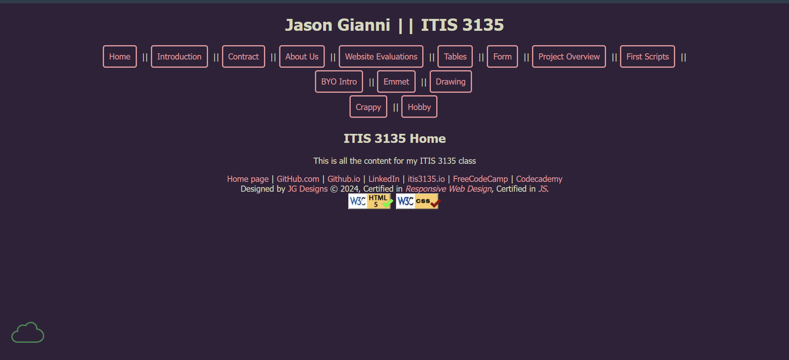

Gianni, Jason

- ✅ Files and folders are lowercase without spaces
- ✅ Site has sufficient contrast
- ✅ Uses different fonts and colors
- ✅ Has header, main, and footer
- ✅ Header is formatted correctly
- ✅ Footer is formatted correctly
- ✅ Main is formatted correctly
- CRAP:
- Contrast: Contrast is good for the most part, but I think that the pink is a little hard to see against the purple background and it could be lighter.
- Repetition: The site is pretty consistent and all elements that perform the same function look similar
- Alignment: The elements on the site are aligned well and very few things look out of place or cramped.
- Proximity: All related elements are grouped together clearly.
- Other comments: I like the boxes around the links in the navbar at the top! However, they take up a lot of space and can draw some attention away from the main content. Also, there should probably be a fall-back for the font used in the site in case it loads on a device with poor connection.